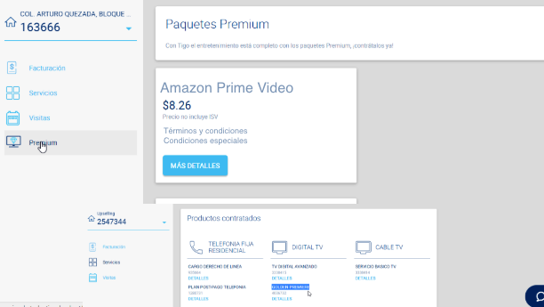

Add-On for mobile and fixed services. Products: Prime Video and Prime Music.
Commercialization: - Hard bundle (included in your plan, cost 0) - Add-on (user can activate and pay x$/month until deactivation, like HBO)
graph TD
subgraph Mitigo
mitigo[Mi tigo B2C]
appbackend[Web Backend]
fapi[API Proxy]
mitigo---appbackend
appbackend---fapi
end
subgraph Docomo
docomo[Docomo/Amazon Backend]
end
subgraph Digital Backend
backend[Apigee]
fapi-->backend
docomo---backend
segment
analytics
tableau
new_relic
waf
end
subgraph Country
bss[Core BSS - OSB]
mobile[Mobile]
fixed[Fixed]
backend-->bss
bss-->fixed
bss-->mobile
end
subgraph Mobile Domain
customer[customer mobile]
CBS[Convergent billing system]
mobile-->customer
end
subgraph fixed Domain
customerfixed[customer fixed]
CBS2[Convergent billing system]
fixed-->customerfixed
end
More information on flows from docomo apis and docomo flows.

title Amazon & Tigo integration - ACTIVATION FLOW
note over END_USER,MITIGO,TIGO_BCK,DOCOMO,AMZ: Identification
END_USER->MITIGO: login w/ mobile or fixed account (email+passw)
MITIGO->END_USER: ok
END_USER->MITIGO: open add-Ons section
note over END_USER,MITIGO,TIGO_BCK,DOCOMO,AMZ: Elegibility
MITIGO->TIGO_BCK: getAddOnOffers()
TIGO_BCK->MITIGO: Amazon Prime Video
END_USER->MITIGO: Click on Buy/Add addOn:Amz Video
note over END_USER,MITIGO,TIGO_BCK,DOCOMO,AMZ: Subscribe
MITIGO->DOCOMO: subscribe
DOCOMO->AMZ: subscribe
AMZ->DOCOMO: ok
DOCOMO->MITIGO: OK, redirectUrl to activate
MITIGO->END_USER: redirect to landing
MITIGO->END_USER: sms or email to complete the flow later
note over END_USER,MITIGO,TIGO_BCK,DOCOMO,AMZ: Association journey + Activation
END_USER->DOCOMO: click on ACTIVATE, go to redirectUrl
AMZ->AMZ: sign in/sign up
AMZ->DOCOMO: deactivation successful
DOCOMO->TIGO_BCK: activation successful alias=123
TIGO_BCK->TIGO_BCK: POST AddOn(tigo_account, product_id)
note over END_USER,MITIGO,TIGO_BCK,DOCOMO,AMZ: end of flowtitle Amazon & Tigo integration - DEACTIVATION FLOW
note over END_USER,MITIGO,TIGO_BCK,DOCOMO,AMZ: Identification
END_USER->MITIGO: login w/ mobile or fixed account (email+passw)
MITIGO->END_USER: ok
END_USER->MITIGO: open addOns
note over END_USER,MITIGO,TIGO_BCK,DOCOMO,AMZ: Add-on Status
MITIGO->TIGO_BCK: getAddOns(user_id)
TIGO_BCK->MITIGO: User_id has: Amazon Prime Video, HBO, ETC.
END_USER->MITIGO: Click on Deactivate addOn:Amz Video
note over END_USER,MITIGO,TIGO_BCK,DOCOMO,AMZ: Deactivate
MITIGO->DOCOMO: deactivate user_id, amz_video
DOCOMO->AMZ: deactivate
MITIGO->TIGO_BCK: DELETE addon(tigo_account, product_id)
MITIGO->END_USER: your subscription has been deactivated
note over END_USER,MITIGO,TIGO_BCK,DOCOMO,AMZ: end of flowRefer to mitigo for details. Here only specific services/details for AMZ.
Example:
"countryCode","siteCode","productName","subscriptionCode","msisdn","alias","telcoCode",
"dateCreated","dateActive","datePendingUnsubscription","dateUnsubscribed",
"unsubscriptionSource"
"XX","amazon","plan123","5b23765be4b06e7171d79c7d","+1234567890",,"OPERATOR1",
"2018-05-22T15:31:06Z","2018-05-22T15:45:31Z",,"2018-06-29T15:45:31Z ",
"TELCO"More information on API Details here